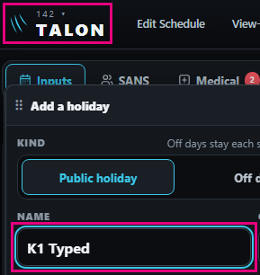
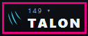
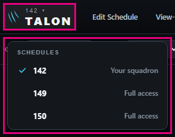
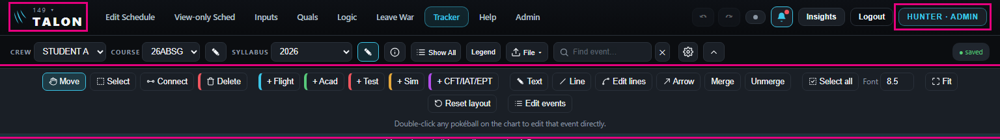
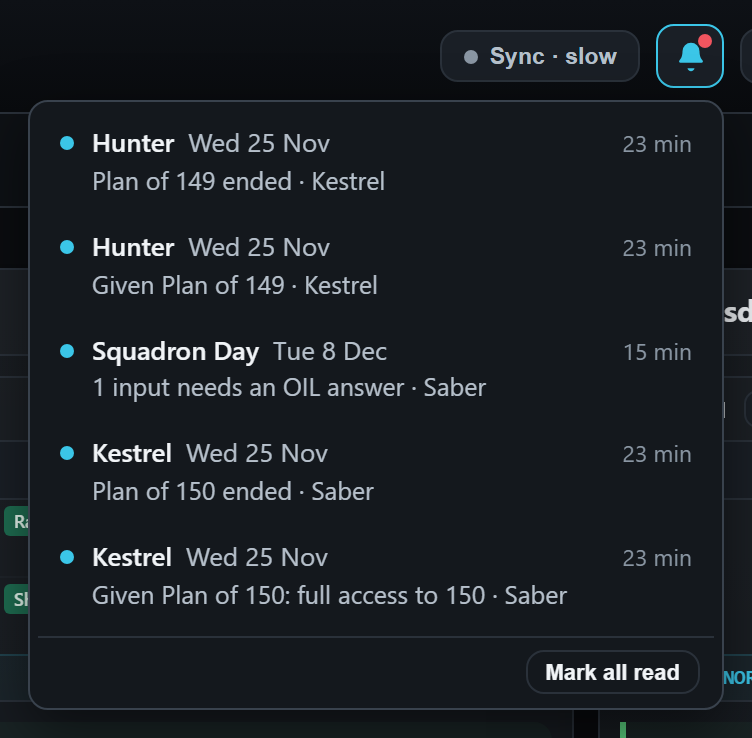
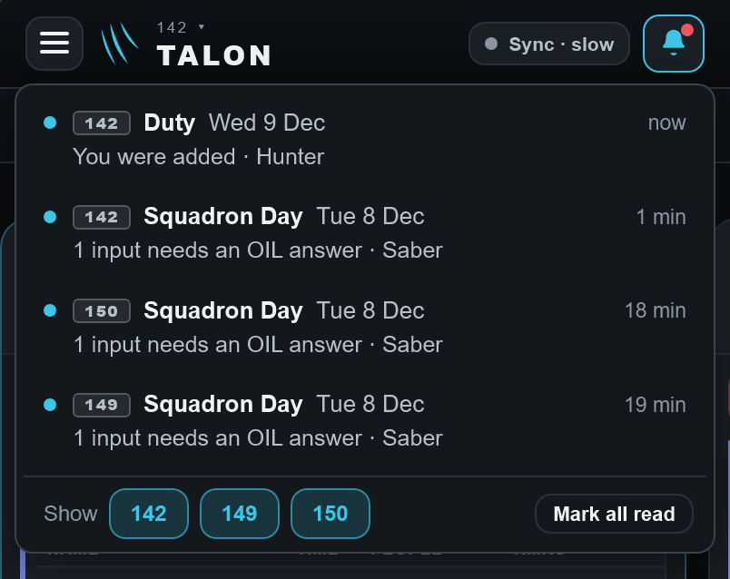
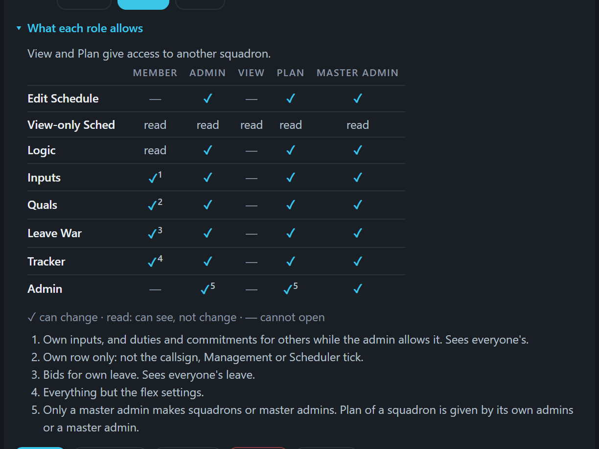
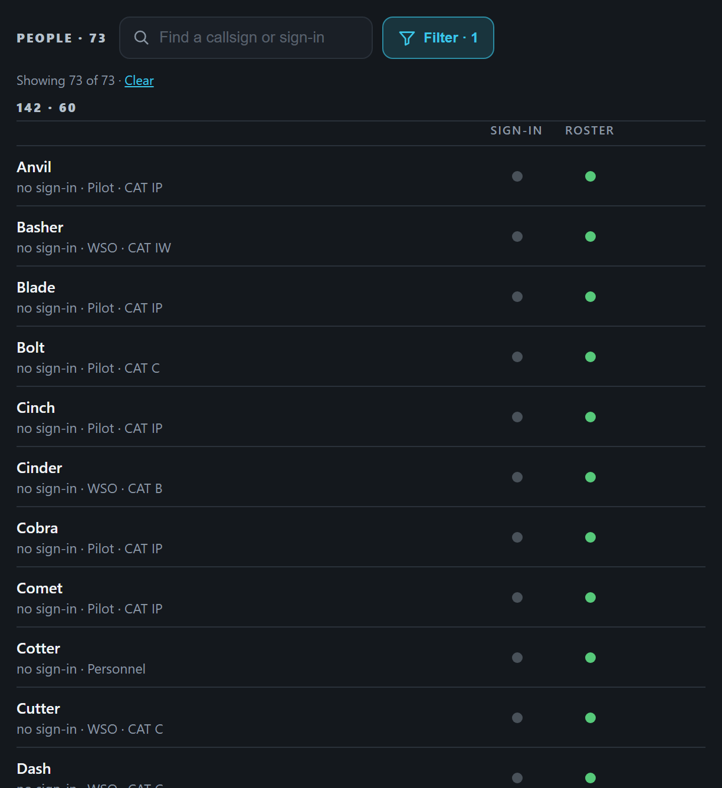
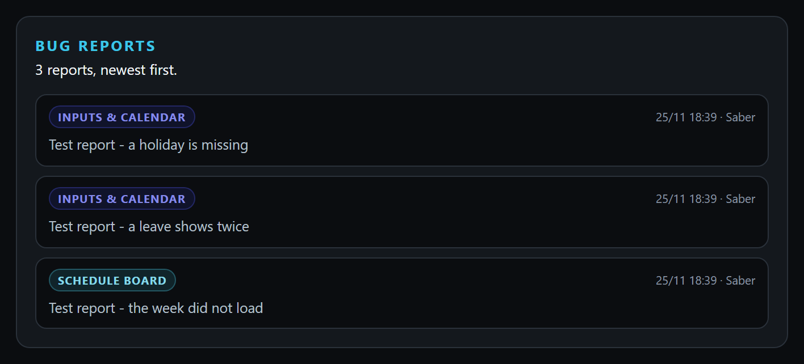
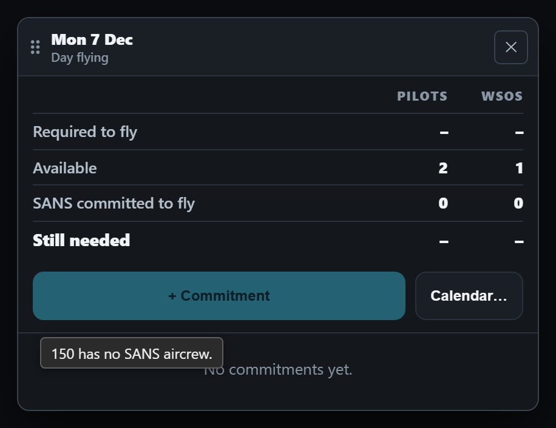

The guard rail: your answers drawn, and nine left to ask
Nothing here is built. Every picture is the real app; "Drawn" adds only the new thing on top. This round has three squadrons, 142, 149 and 150, as you asked. Green is what I recommend.
To answer: reply "as recommended for all". Or tap Differently on any item, then copy the reply from the bar at the foot.
All new since the last page. Your answers to groups A and C are taken off the page (kept in the project). Group B waits until after the first build, as you said.
Who the examples name
Saber is a master admin; his home squadron is 142. Hunter is 142's admin; he holds Plan of 149 (full access) and View of 150 (look only). Kestrel is 149's own admin. Mako is 150's own admin. Squadron 150 was made for these pictures with "+ New squadron", with three people of its own.
Tap a picture to enlarge it; tap again for full size. The films play when tapped.
Group E: new questions 9
- E1The Calendar window when you pick another squadronCloses by itself, unless a holiday or Every Monday is half done.
- E2The Tracker's marking window when you pickCloses by itself, as today.
- E3The chart editor left open at the member-view switchIt closes at the switch.
- E4A Tracker window hidden behind the Flow chart tabThe ones that only show close by themselves.
- E5An input window held since midnight, then you pickThe pick goes through and gives it back, as today.
- E6Who is told when someone is given Plan of 149149's own admins; his name wears "142".
- E7Undo of "+ New squadron" with a window openRefused in the first build; the rest waits with group B.
- E8A master admin's "All squadrons" with 149 pickedEvery row whole; his own squadron open.
- E9What I read into your answersTen small points; say if any is wrong.
Group D: what you ruled, drawn for your look 12
- D1"+ Add a person" at the top, with CancelAs drawn.
- D2The squadron number's two fades (films)As drawn.
- D3The bell with three squadronsAs drawn.
- D4Other squadrons folded on Admin → UsersAs drawn.
- D5A man of another squadron, openedAs drawn; "None" stays lit.
- D6Plan greyed for one who may not give itThe reason as words under the line.
- D7A master admin's own squadron openAs drawn.
- D8Another squadron's archived callsignAs drawn; "Add person" greyed meanwhile.
- D9Bug reports with their squadronAs drawn.
- D10The badge reading "View only"A press still switches to the member view.
- D11"+ Commitment" on a squadron with no SANS aircrewThe reason as words beside it.
- D12"+ Input" and the sign-off boxes on another squadronAs drawn.
Told, nothing to answer
- Found today and fixed in the first build, each against something you already ruled: a day opened on the SANS calendar and the Leave War's day panel stay open when you pick 150 and quietly show 150's figures; 149's own admin, opening a 142 man, still sees his sign-in and role and a live Save; "+ Input" on 149 starts with Hunter himself picked.
- A bell line about an input you filed for 149, after your Plan of 149 ended: it cannot happen. When the Plan ends, 149's lines leave your bell, so there is no line left to press.
- Bug reports are lost today at Logout or a reload, for everyone (not only members, as first thought). They are kept with the first build's bug-report change.
Group B: 12 that wait until after the first build (Logout, Undo, the refresh card)
- B1Logout while a change is not saved changed in review"Your last changes aren't saved yet. Log out anyway?"
- B2Logout with an input open"Log out and lose them?"
- B3Logout with an Admin → Users row openAsked, as drawn.
- B4Logout over a window with no question of its own changed in reviewOne question that names the window.
- B5Reaching Logout on a phone with a window openThe top bar stays in reach above the window.
- B6Undo with changes waiting on two other squadrons changed in review"Pick 142 or 149 to undo your changes there."
- B7Undo of "+ New squadron" while it is in viewIt waits on the squadron you made it from.
- B8The greyed Undo on a phoneA tap shows the reason.
- B9The refresh card when nothing is openShown all the same.
- B10The refresh card's words"You are 149's now".
- B11Refresh while a save is waitingRefresh tries the save once first.
- B12Five small cases where nothing is lostAll left as they are.
Group E: new questions
E1. The Calendar window when you pick another squadron
When this happens: Saber is in Inputs settings → Calendar on 142, marking flying days for December. He wants to check 149's, and picks 149 with the Calendar still open. A few times a month, at the desk.
Today: a press on a day is saved at once. But the window has two small forms that wait for their own Save: "Every Monday" and "Add a holiday", which has a box to type the holiday's name. Picking 149 closes the whole window with nothing said, and a holiday name typed and not yet saved is lost.

Today: a holiday name typed, not saved, 142 in view.

Today: 149 picked. The window is gone, and the name with it.
Recommended: the Calendar closes by itself at a pick, like the windows that only show things, because each day you press is already saved. But while one of its two forms holds something not saved, the pick is refused with the grey note, as for any window with typing:
A new holiday half done: “Blocked: save or cancel the new holiday, then pick 149.”
A listed holiday opened and changed: “Blocked: save or cancel the changed holiday, then pick 149.”
Every Monday pressed, not saved: “Blocked: save or cancel “Every Monday”, then pick 149.”
A sheet of holidays read in, not yet added: “Blocked: add or cancel the sheet's holidays, then pick 149.”
A new holiday that no leave period covers yet (today the app keeps it and saves it by itself later, so "save" would not work): “Blocked: cancel the new holiday, or add its leave period, then pick 149.”
With the Calendar open on a page you are not looking at, the note names that page: Inputs, the SANS calendar or the Leave War. All these words are drafts, read by a fresh reviewer; the double quote marks inside a grey note would be a first.
The other choices: refuse whenever the Calendar is open (one more press for nothing, most of the time); or always close it (a typed holiday name is lost, as today).
↑ The list
E2. The Tracker's marking window when you pick
When this happens: Saber marks a student's sortie on 142's Tracker (a press on a ball opens the marking window), then opens the squadron list to look at 149. Several times a week.
Today: every press in the marking window is saved at once (Fails +, Fails −, a grade), and there is nothing to type. The one thing that waits: a "Done on" day picked for an event not yet done, which is kept only once a grade is given. The press on the squadron list closes the marking window, and the pick goes through.
 Today: the marking window open.
Today: the marking window open.

Today: one press on the squadron list closes it and opens the list.
Recommended: leave it as today: it closes by itself and the pick goes through. The only thing lost is a "Done on" day without a grade, which is one press to pick again.
The other choice: refuse the pick while a "Done on" day is waiting. It needs the Tracker to stop closing this window at a press on the squadron list, which is a change to how the Tracker's presses work.
↑ The list
E3. The chart editor left open at the member-view switch
When this happens: Hunter (Plan of 149) opens "Edit chart layout" on 149's Tracker, looks, moves nothing, and presses his name badge to see the member view. Rare.
Today: nothing is asked. The member view comes up on 149, which has no Tracker tab, so the editor is out of sight. Back in the admin view, 149's Tracker still has the editor open.

Today: the editor open, nothing moved.
 Today: back in the admin view, still open.
Today: back in the admin view, still open.
Recommended: the editor closes at the switch. Nothing was moved, so nothing is lost, and nothing is left open behind a switch you made. If something was moved, the question you already approved is asked (Save them / Discard them / Stay).
↑ The list
E4. A Tracker window hidden behind the Flow chart tab
When this happens: Saber opens a student's Failures in the Tracker's Info panel, then makes the browser half his screen (or turns a tablet upright). The Tracker then shows one half at a time, the Flow chart, and the Failures window is out of sight behind the Info tab. He picks 149. Rare.
Today: nothing on screen says a window is open. The pick goes through and the window is gone; it does not come back on 142.
 Today: Failures open at full width.
Today: Failures open at full width.
 Today: narrower, the Flow chart shows; the window is hidden.
Today: narrower, the Flow chart shows; the window is hidden.
Recommended: the Info panel's windows that only show things (Down days, Failures) close by themselves at a pick, like the other show-only windows you approved. Its two small pop-ups for a lull are checked before the build: if one holds a choice not yet saved, the pick is refused with a note naming the Info tab, its words drawn for you first.
↑ The list
E5. An input window held since midnight, then you pick
When this happens: Saber has an input open with words typed when, at midnight, a change he did not make moves his home from 142 to 149. The window is greyed with "This change could not be saved." and Close. He picks 142. Very rare.
Today: the pick goes through, and on 142 the window comes back live with his words, so he can save them there.
 Today: held on 149, his words still in it.
Today: held on 149, his words still in it.
 Today: 142 picked; the window is live and his words can be saved.
Today: 142 picked; the window is live and his words can be saved.
Recommended: keep today's way for a window already held: the pick goes through and gives it back. Refusing would leave Close as his only way on, and Close drops his words without asking. The later build that replaces held windows with a card settles this for good.
↑ The list
E6. Who is told when someone is given Plan of 149
When this happens: Kestrel (149's admin) gives Hunter (142's admin) Plan of 149, so Hunter can help plan 149's week. Later he ends it. A few times a year.
You ruled that 149's admins are told on their bell, and who did it. Two things are open. First, with three squadrons, a 149 admin reading "Hunter" may not know where Hunter is from. Second, Mako (150's admin) might also hold Plan of 149; is he told too?

Drawn: the two lines as worded.
 Drawn: the same, Hunter's name wearing his home "142".
Drawn: the same, Hunter's name wearing his home "142".
Recommended: Hunter's name wears his home squadron's grey number, as names from another squadron do in the sign-off boxes; and only 149's own admins are told, the people who can give or end Plan of 149, not someone who only holds Plan of it. Nobody is told of his own press, as today, so Kestrel's line reaches 149's other admins.
↑ The list
E7. Undo of "+ New squadron" with a window open
When this happens: Saber makes squadron 150, picks it, opens the Calendar there (or a save fails), then presses Undo. Only a master admin makes squadrons, so this is rare.
Today: "Undid: adding a squadron". 150 is gone, the bar is back on 142, and nothing is asked: an open window or a change not saved goes with it.
 Today: on the new squadron, before Undo.
Today: on the new squadron, before Undo.
 Today: after Undo, back on 142, nothing said.
Today: after Undo, back on 142, nothing said.
Why it is here: you put Undo off to group B, after the first build. But this one Undo changes the squadron in view, the very thing the guard stops, so the first build would leave this one way through. I should have told you that when you put group B off.
Recommended: the first build refuses this Undo while a window is open or a change is not saved, with the grey note (its words drawn for you first). Everything else about Undo still waits for your group B answers.
The other choice: leave it open until group B. Nothing else in the first build depends on it.
↑ The list
E8. A master admin's "All squadrons" with 149 picked
When this happens: Saber (home 142) has 149 picked, goes to Admin → Users and ticks "All squadrons" in Filter, to see everyone. Now and then.
You ruled that in "All squadrons" his own squadron stands open and the rest fold. You also ruled that on 149's page a 142 man shows only his name and his 149 access line. With 149 picked and the tick on, which wins?
Recommended: in "All squadrons" Saber sees every row whole, because a master admin is an admin of every squadron. His own 142 stands open at the top, 149 and 150 folded under it, as drawn in D7. The short rows of D5 are for someone who is not an admin of that squadron.
The other choice: the squadron picked (149) stands open and 142 is folded with short rows. That makes "All squadrons" look different depending on what is picked.
↑ The list
E9. What I read into your answers
Each is how the plan understands an answer of yours where you did not say. None is built unless you let it stand.
- His own inputs on another squadron's page: a man who moved from 142 and only holds View of 142 keeps seeing his old 142 inputs on his own page, because View does not open 142's Inputs page.
- Windows you have not seen one by one (the Tracker's Show All and its side pop-ups; the Scheduler Board's two question cards; Leave War sheets that only show figures, such as a day's list or the OIL tracker) are checked one by one before the build: those with nothing to edit close by themselves, as you ruled for the others; the rest refuse.
- A bell line that takes you to another squadron closes the show-only windows and ends edit modes, the same as a pick.
- A pick waiting for a save to finish is dropped if you press something else meanwhile.
- The fade runs at every change of squadron after the app has opened, whether you pressed or not (a move at midnight too); only the top bar's number fades.
- Add a person: after a person is added the form clears and stays open for the next one; Escape does what Cancel does.
- On another squadron's page a man's row has no sign-in or roster dot and no role badge; someone holding Plan of the squadron stays on its main list.
- "The bell shows more than one squadron" means more than one Show button switched on, so the number column does not come and go as lines arrive.
- Bug reports are kept for good (today they vanish at a reload); the number shows on them once the app has more than one squadron.
- Restoring an archived man whose callsign is now taken names the squadron too: "… is already taken on 149".
↑ The list
Group D: what you ruled, drawn
D1. "+ Add a person" at the top, with Cancel
What you ruled: the button beside Filter; the form opens under it; Cancel clears it; while something is typed in it, a pick of another squadron is refused.
On a desktop the note covers part of the page's title "Admin" for the few seconds it shows; nothing you would press is under it.
Recommended: as drawn.
↑ The list
D2. The squadron number's two fades
What you ruled: at every change of squadron, the number dims to about a third and back, twice, in about a second; with "less motion" on, white for a second instead.
Drawn: Saber on 142 picks 150. Tap a film to play it.
Desktop: 142 to 150.
Phone.
Desktop, less motion on: white, then grey.
Phone, less motion on.
The number is small and already grey, so the fade is gentle. If you want it to catch the eye more, say so: it could dim further, never fully out.
Recommended: as drawn.
↑ The list
D3. The bell with three squadrons
What you ruled: when the bell shows more than one squadron, every line wears its number, a plain grey number first on the line, in one column. A line about your own account keeps the place empty.
 Drawn, desktop: Saber with 142, 149 and 150 switched on. Every line here is a real line.
Drawn, desktop: Saber with 142, 149 and 150 switched on. Every line here is a real line.

Drawn, phone.
 Drawn: Hunter's bell (142 and 149); his own account lines keep the number's place empty. 150 is not there: View of a squadron never shows its bell lines, as you ruled.
Drawn: Hunter's bell (142 and 149); his own account lines keep the number's place empty. 150 is not there: View of a squadron never shows its bell lines, as you ruled.
Three of Saber's lines read alike ("Squadron Day … 1 input needs an OIL answer · Saber"); only the number tells them apart, which is what the column is for.
Recommended: as drawn.
↑ The list
D4. Other squadrons folded on Admin → Users
What you ruled: under a squadron's own people, each other squadron is one closed heading; seen only by those who may give access to that squadron.
 Drawn: Kestrel on 149. Under 149's people, "▸ 142 · 60 people" and "▸ 150 · 3 people".
Drawn: Kestrel on 149. Under 149's people, "▸ 142 · 60 people" and "▸ 150 · 3 people".
 Drawn, phone.
Drawn, phone.
Recommended: as drawn.
↑ The list
D5. A man of another squadron, opened
What you ruled: on 149's page a 142 man shows only his callsign, "142", seat, CAT and his 149 access line (None · View · Plan). Nothing else.
 Today: Hunter on 149 opening Ranger (142): sign-in, role, Save, Suspend, Archive and Delete all live. Fixed by the first build.
Today: Hunter on 149 opening Ranger (142): sign-in, role, Save, Suspend, Archive and Delete all live. Fixed by the first build.
 Drawn: "▾ 142 · 60 people" opened; each row its access line for 149.
Drawn: "▾ 142 · 60 people" opened; each row its access line for 149.
 Drawn, phone.
Drawn, phone.
Sixty lit "None" buttons in a column look heavy. They are the app's own access line, the same as on every person's row, so it reads the same everywhere; the other choice is to show "None" unlit in this list only, which makes one control look two ways.
Recommended: as drawn, the access line the same as everywhere else.
↑ The list
D6. Plan greyed for one who may not give it
What you ruled: Plan of 149 is given and ended by 149's own admins or a master admin, never by someone who only holds Plan of it.
Example: Hunter holds Plan of 149 and opens a 142 man on 149's page. He may give View of 149, but Plan is greyed.
 Drawn: the reason as words under the line: "Only 149's own admins or a master admin can give or end Plan of 149."
Drawn: the reason as words under the line: "Only 149's own admins or a master admin can give or end Plan of 149."
 Drawn: the same reason shown only when the mouse rests on it.
Drawn: the same reason shown only when the mouse rests on it.

Drawn: the roles table's note: "Only a master admin makes squadrons or master admins. Plan of a squadron is given by its own admins or a master admin."
Recommended: the reason as words under the line, as the app's other greyed access reasons already are. A reason shown only on mouse rest never shows on an iPhone.
↑ The list
D7. A master admin's own squadron open
What you ruled: in "All squadrons" his own squadron stands open and every other is folded.

Today: every squadron open.
 Drawn: Saber's 142 open; "▸ 149 · 10 people" and "▸ 150 · 3 people" closed under it.
Drawn: Saber's 142 open; "▸ 149 · 10 people" and "▸ 150 · 3 people" closed under it.
Recommended: as drawn.
↑ The list
D8. Another squadron's archived callsign
What you ruled: the note names the squadron and shows enough to recognise him; for now only "Someone new: add him" and "If this is him, ask 142's admin". "It's him" comes with the transfer build.
Example: Kestrel adds a new pilot on 149 and types "Jester". 142 has an archived Jester.
Today an archived callsign gives no warning at all: the new man goes in silently. In the drawing the form's own "Add person" stays live beside "Someone new: add him", two ways to do one thing.
Recommended: as drawn, with the form's "Add person" greyed while the question shows, so "Someone new: add him" is the one way on.
↑ The list
D9. Bug reports with their squadron

Today.
 Drawn: one list, newest first, each report wearing its grey number.
Drawn: one list, newest first, each report wearing its grey number.
Recommended: as drawn.
↑ The list
D10. The badge reading "View only"
Example: Hunter picks 150, where he can only look.
Recommended: as drawn, and a press on the badge still does what it does everywhere: switch to the member view and back.
↑ The list
D11. "+ Commitment" on a squadron with no SANS aircrew
 Today: 150's SANS calendar, "+ Commitment" live.
Today: 150's SANS calendar, "+ Commitment" live.

Drawn: greyed, "150 has no SANS aircrew."
Recommended: greyed, and the reason shown as words beside the button, so a phone shows it too.
↑ The list
D12. "+ Input" and the sign-off boxes on another squadron
Recommended: as drawn. In the sign-off boxes the number is written after the name in plain letters ("Hunter 142"), because the browser's own list cannot show the grey box.
↑ The list
Found at the last page's review, still to be put to you as questions
- "Mark all read", pressed with 149 picked, also marks the 142 lines read. Under your rule of today it should mark only what the list is showing, and that is true today only when 142 is switched off under "Show".
- While an OIL question of yours is waiting, one tap on the bell goes straight to it, so the bell's list and its "Show" buttons cannot be reached until it is answered.
Group B: 12 that wait until after the first build (Logout, Undo, the refresh card). Tap to open.
B1. Logout while a change is not saved
"Your last changes aren't saved yet. Log out anyway?"
When this happens: "Not saved — keep this page open" is showing and you press Logout. A bad connection, most likely at a shared computer.
Today: nothing is asked, and nothing is lost. The sign-in screen comes up with the band and Retry still over it. The next sign-in waits ("The last change has not saved yet — check the connection. Sign in waits until it saves."). When Retry gets through, the change is saved and the screen says "Saved. Press Sign in again."
 Today, phone: after Logout, the sign-in waits until the change saves.
Today, phone: after Logout, the sign-in waits until the change saves.
You ruled that Logout asks here. The draft question you read said "Log out and lose it?". That is not what the app does, and I do not recommend changing the app to make it true.
Recommended: the question says what really happens.
Your last changes aren't saved yet. Log out anyway? — Log out · Stay
The other choice: Logout throws the waiting change away, with "Your last changes aren't saved. Log out and lose them?" — "Discard and log out" · "Stay". That would be a new way to lose work.
 Drawn, recommended: nothing is lost, so "Log out" is a plain button.
Drawn, recommended: nothing is lost, so "Log out" is a plain button.
 Drawn, the other choice: the change would be thrown away.
Drawn, the other choice: the change would be thrown away.
Changed in review. I agree that the question must not say "lose". I would add what does happen, so "anyway" has a meaning: "Your last changes aren't saved yet. They will save when the connection is back, if this page stays open. Log out anyway?"
↑ The list
B2. Logout with an input open and words typed in it
"Log out and lose them?"
When this happens: you press Logout with an input window open and unsaved words in it.
Today: you are signed out at once and the words are lost, nothing asked. You ruled that Logout asks the window's own question first. Its words today are about closing the window, not about logging out.
Recommended: at Logout the question and its button say Logout. The window's ✕ and Escape keep today's words.
This input has unsaved changes. Log out and lose them? — Discard and log out · Keep editing
 Drawn, today's words: "Close it and lose them?" — the button says close, and also logs you out.
Drawn, today's words: "Close it and lose them?" — the button says close, and also logs you out.
 Drawn, recommended: "Log out and lose them?"
Drawn, recommended: "Log out and lose them?"
↑ The list
B3. Logout with an Admin → Users row open
Asked, as drawn.
When this happens: a row is open with an unsaved change and you press Logout.
Today: signed out, the change lost, nothing asked.
Recommended: asked, in the same shape as B2.
The open row has unsaved changes. Log out and lose them? — Discard and log out · Keep editing
 Drawn: the question hanging from Logout, the row open below.
Drawn: the question hanging from Logout, the row open below.
↑ The list
B4. Logout over a window that has no question of its own
One question that names the window.
When this happens: you press Logout with a holiday's name typed in "Add a holiday", or with answers chosen in a day's OIL list and not saved. Only the input window has a question of its own.
Today: signed out, the typing or the answers lost, nothing asked. (Place a bid and the Tracker's Edit details cover Logout with their shade on a desktop, so they cannot be left this way.)
Recommended: one question for all such windows, naming the window by its own title.
“Add a holiday” has unsaved changes. Log out and lose them? — Discard and log out · Keep editing
 Drawn: three windows are open; the question names the one that holds the typing.
Drawn: three windows are open; the question names the one that holds the typing.
Changed in review. I agree. Missing beside it: Logout with "Add a person", giving access or "+ New squadron" half filled in. The same one question would name each: "“Add a person” has unsaved changes. Log out and lose them?"
↑ The list
B5. Reaching Logout on a phone with a window open
The top bar stays in reach above the window.
When this happens: on a phone, Logout lives in the ☰ menu. An input window fills the screen and its title strip covers ☰. You ruled that Logout can be reached with a window open; nothing does that today.
Recommended (first picture): the window stands just under the top bar, so ☰ stays in reach and Logout is where you already look for it. Nothing new is added to the screen.
Its cost: the window is shorter by the height of the top bar (49px). Undo, Redo, the bell, the squadron list and the member-view line become reachable over the window too, as they already are on a desktop; a pick from there is refused with the note at the foot. The other choice (second picture): a Logout button on the window's own strip beside ✕. It reaches only Logout, puts a second Logout on screen, and a thumb slip beside ✕ logs you out.
 Drawn, recommended: the bar stays above the window; ☰ in reach.
Drawn, recommended: the bar stays above the window; ☰ in reach.
 Drawn, the other choice: Logout on the window's strip.
Drawn, the other choice: Logout on the window's strip.
 Drawn, recommended: ☰ opened over the window, Logout inside.
Drawn, recommended: ☰ opened over the window, Logout inside.
↑ The list
B6. Undo with changes waiting on two other squadrons
"Pick 142 or 149 to undo your changes there."
When this happens: you ruled that Undo reaches only the squadron in view and that the greyed button says why. A master admin has made changes on 142 and on 149 and is now looking at a third squadron.
Recommended: the reason names each squadron that holds a change of yours, and only squadrons you can pick now.
One: Pick 142 to undo your changes there.
Two: Pick 142 or 149 to undo your changes there.
Redo: Pick 142 to redo your changes there.
These replace the draft you read ("Your 142 changes are on 142's Undo."): there is only one Undo button, so "142's Undo" names a thing the screen does not have. A change made on 149 does not clear a Redo waiting on 142; today's app already keeps it.
 Drawn, desktop: the greyed Undo and its reason.
Drawn, desktop: the greyed Undo and its reason.
Changed in review. I agree for two squadrons. With many, the reason should name only the squadron of your latest change ("Pick 142 to undo your last change there."), so the note never grows into a list.
↑ The list
B7. Undo of "+ New squadron" while that squadron is in view
It waits on the squadron you made it from.
When this happens: Saber, on 142, makes squadron 150 with "+ New squadron", picks 150, and presses Undo.
Today: 150 is taken away under him. He lands back on 142's Admin page with only the passing note "Undid: adding a squadron" to say so.
 Today, phone: after Undo, back on 142 with a passing note.
Today, phone: after Undo, back on 142 with a passing note.
Recommended: making a squadron belongs to the squadron you were on when you made it (142). On 150 the Undo is greyed and says "Pick 142 to undo your changes there." So a squadron is never undone while you are standing in it.
↑ The list
B8. The greyed Undo on a phone
A tap shows the reason.
When this happens: the greyed Undo's reason is shown when the mouse rests on it. A phone has no mouse: a tap and a long press both show nothing. You read on an iPhone, so today you cannot read why Undo is grey. This has been so for every greyed-Undo reason, not only the new one.
Recommended: on a phone, a tap on a greyed Undo or Redo shows its reason as the app's plain passing note at the foot (not the grey "Blocked:" note, which is for a change of yours that was refused).
 Today, phone: Undo greyed; nothing says why.
Today, phone: Undo greyed; nothing says why.
 Drawn: after a tap, the reason at the foot.
Drawn: after a tap, the reason at the foot.
↑ The list
B9. The refresh card when nothing is open
Shown all the same.
When this happens: Hunter's move to 149 takes effect at midnight while he has the app open with no window open.
Today: the bar changes from 142 to 149 and his badge from Admin to Member, without a word. The only sign is a dot on the bell.
 Today, phone: before midnight.
Today, phone: before midnight.
 Today, phone: after midnight. 149, nothing said.
Today, phone: after midnight. 149, nothing said.
Recommended: the card is shown all the same, so he knows why the app changed under him. One rule: whenever the squadron or his rights change without his press, the card.
For a man who is not moving, midnight shows nothing; tried on the app. A posting out that ends his access keeps today's "Your access is suspended" screen. A posting to SANS changes nothing he can see, so nothing is shown.
↑ The list
B10. The refresh card's words, true on any day it is read
"You are 149's now".
When this happens: the card you approved says "You are 149's from today" and "took effect at midnight". A card raised at midnight is read the next morning, or two days later if the computer was left on. Then "from today" is no longer true.
Recommended: one wording that is true whenever it is read. This changes words you approved.
You are 149's now
Your move to 149 took effect on Thu 16 Jul. Refresh and sign in again to carry on. Anything you hadn't saved is lost.
 Drawn, recommended: the date in place of "today" and "midnight".
Drawn, recommended: the date in place of "today" and "midnight".
 The card you approved.
The card you approved.
↑ The list
B11. Refresh while a save is waiting
Refresh tries the save once first.
When this happens: the refresh card comes up while "Not saved" is showing.
Today: reloading the page while a save waits loses that change; only the browser's own "leave this page?" question stands in the way.
Recommended: the card's Refresh button tries the waiting save once, then reloads. If the save still fails the change is lost, as the card already says.
↑ The list
B12. Five small cases, all recommended as they are today
All left as they are.
When this happens: each looked like a way to lose work at a pick. Tried on the app, none loses anything, so I recommend no change. Take them as one.
Words typed in a day's note on Edit Schedule, the cursor still in it: saved into 142's note, where they were typed.
A figure typed in a Balances box and not left: saved at the pick, with its line in the edit history.
Words in Help's bug-report box: stay in the box on both squadrons until sent.
A calendar day's "+ Note" half-typed: saved onto 142's day. Its window is one the guard will refuse a pick over, so this stops arising.
A drag in progress: on a phone a second finger on the squadron control does nothing while a puck is held. On a desktop a pick can only be made mid-drag by the keys (48 presses of Tab); the drag then changes nothing on either squadron.
↑ The list